Do lançamento do dia ao resultado do mês
Este mapa mostra o caminho completo: o que o treinador lança todo dia no computador da musculação, onde a gestão acompanha por quinzena, como ficam as reuniões 1:1 e o perfil de cada um. Percorra na ordem.
🧪 Esta é uma versão de teste
- Percorra o mapa e faça cada passo na plataforma.
- Use os botões de verdade. Pode lançar números de teste: depois a gente limpa.
- Em cada tela tem o botão 🧭 Como usar no canto inferior direito. Ele explica tudo passo a passo.
- Anote tudo o que travar, confundir ou parecer errado e mande para o seu líder.
📍 Tela: (ex.: Lançamento do dia)
👆 O que eu fiz: (ex.: cliquei em Salvar o dia)
❗ O que aconteceu: (ex.: apareceu uma mensagem de erro)
📸 Print da tela, se puder.
🛠️ Antes de começar · gestão · 2 minutos
O Lançamento do dia funciona em qualquer computador ou celular. Para testar agora, pode ser no de vocês. Quando for para o computador da musculação, repita estes passos lá, uma vez só.
- Abra o Lançamento do dia (link no fim deste mapa).
- Clique em "Configurar com o login do gestor" e entre com o login da Direção (o mesmo do Hub). A lista com os nomes da equipe aparece.
- Salve a página nos favoritos do navegador com o nome Lançamento do dia.
- No Hub, vá em Equipe › 🏢 Funcionamento e confira os dias e horários da academia (hoje está segunda a sábado).
- Pronto: cada treinador já pode clicar no próprio nome e lançar.
Se depois de atualizar a página algo aparecer diferente do mapa, aperte Ctrl + F5 (no celular, feche e abra a página).
Sou treinador(a)
Lançamento do dia no computador da musculação. 5 passos, cerca de 2 minutos por dia.
Sou da gestão
Direção e líderes: funcionamento, lançamentos da equipe, quinzenas, reuniões 1:1, perfil comportamental e Hub de Pessoas.
🏋️ Treinador(a) todo dia, no fim do turno
Você lança só o que aconteceu hoje. Leva cerca de 2 minutos.
Abra o Lançamento do dia
No computador da musculação, abra o favorito Lançamento do dia (ou o link abaixo).
gefitcorporativo-glitch.github.io/rgcave-plataforma/retencao/lancamento_dia.htmlClique no seu nome e digite a sua senha
A senha é a mesma do Hub e da Área do Treinador. Esqueceu? Procure o seu líder.
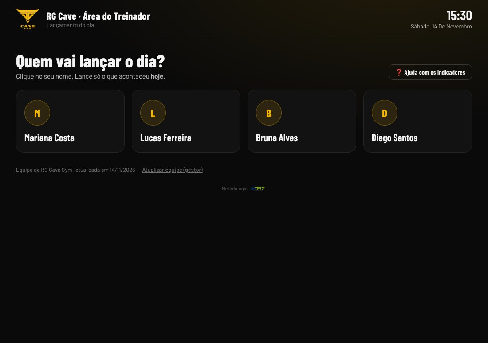
Lance o dia com os botões − e +
| Item | O que lançar |
|---|---|
| ⚡ Experiências iniciadas | Leads que fizeram hoje o 1º dia da Experiência com você. |
| 🆕 Alunos novos | Alunos que se matricularam e começaram a treinar com você hoje. |
| 🗂️ Planners iniciados | Planners que você iniciou hoje: alunos novos, alunos antigos ou mudança de carteira. Precisa ser no mínimo igual a alunos novos. |
| 🎯 Consultorias com leads | Consultorias com leads em Experiência (ainda não são alunos). |
| 📋 Consultorias com alunos | Consultorias com alunos já matriculados. |
| 📏 Avaliações tecnológicas | Bioimpedância, testes físicos, mapeamento de saúde. |
| 📅 Revisões agendadas | Alunos da sua carteira marcados para revisar o treino hoje (a cada 21 dias). Sem revisão hoje? Deixe 0. |
| ✅ Revisões realizadas | Revisões que você realmente fez hoje. Se o aluno faltou, não conta. |
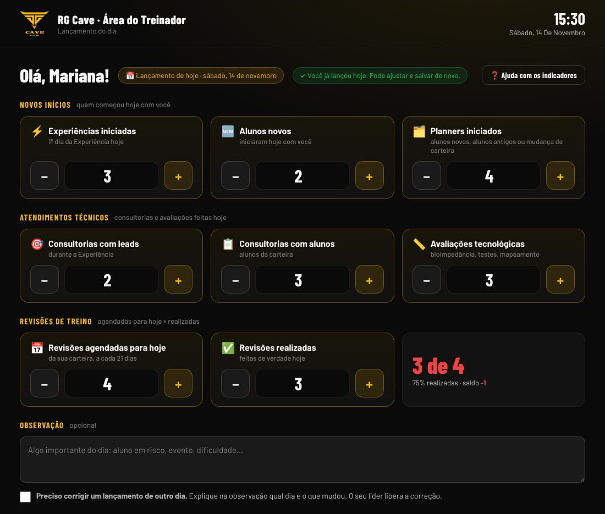
Clique em Salvar o dia
Se algo não bater (por exemplo, menos planners que alunos novos), aparece "Confere antes de salvar?". Corrija ou confirme. Depois aparece "Pronto!" e a tela volta para a lista de nomes.
Errou um dia que já passou?
Você só lança o dia de hoje. Para corrigir outro dia, marque "Preciso corrigir um lançamento de outro dia" e explique na observação. O seu líder libera, e na próxima vez aparece o botão "Corrigir" com a data.
✅ Checklist de teste do treinador
📊 Gestão Direção e líderes
Tudo fica no Hub, na aba Equipe. Os lançamentos vêm da Área do Treinador, que usa o mesmo e-mail e a mesma senha do Hub.
Prepare o computador (uma vez só)
É o bloco "Antes de começar", no topo do mapa. Abra o Lançamento do dia no computador que vai ser usado, clique em "Configurar com o login do gestor" e entre com o login da Direção. A lista da equipe aparece. Salve a página nos favoritos.
Hub › Equipe › 🏢 Funcionamento
Marque os dias e horários em que a academia abre. Só os dias abertos contam como dia de lançamento. Hoje está seg a sáb: confira e ajuste (domingo, se abrir).
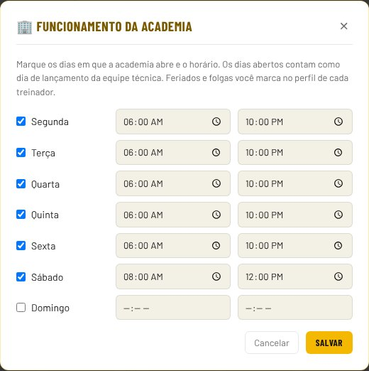
Hub › Equipe › 📊 Lançamentos da equipe
Todos os treinadores lado a lado por Q1 (dia 1 a 15), Q2 (dia 16 ao fim) ou mês. Amarelo é ponto de atenção: dias sem lançamento, planners abaixo de alunos novos, pedidos de correção. Saldo de revisões negativo = revisões perdidas: vale abordar na 1:1.
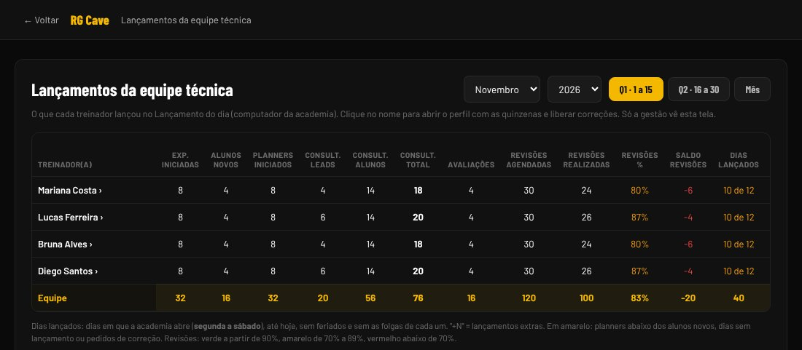
Perfil do treinador › ✍️ Quinzenas e calendário
No Hub › Equipe, clique em 👤 Perfil do treinador. O bloco de quinzenas mostra o que ele lançou e a faixa com todos os dias do mês:
- ✓ lançou · – faltou lançar · ⚠ pediu correção · 🔓 correção liberada · 🏖 folga · 🎌 feriado
- Clique num dia para: liberar a correção (dia que já passou), marcar folga daquele treinador ou marcar feriado da academia toda.
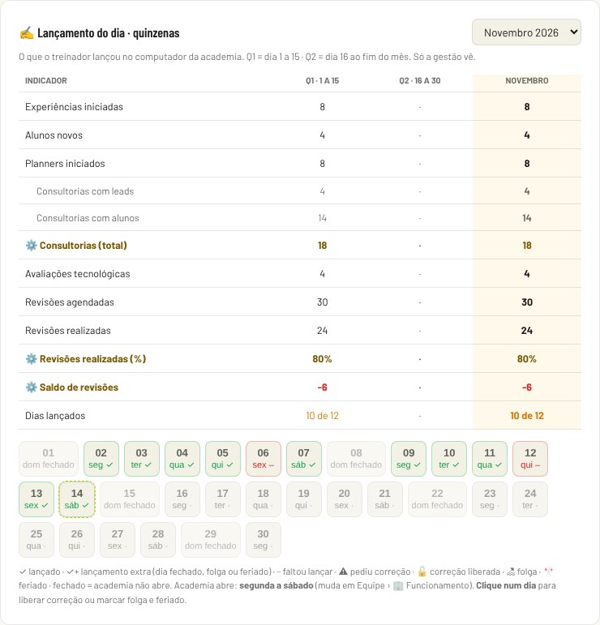
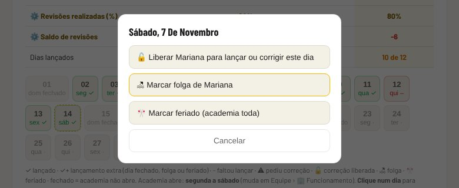
Perfil › 📈 Indicadores do ano
Clique em Abrir tabela: janeiro a dezembro, com setas de subiu ou caiu. Números em dourado são sugestões que vêm do lançamento do dia e do sistema: confirme ou digite por cima. Carteira e renovação (a renovar e renovados) são digitadas pela gestão.
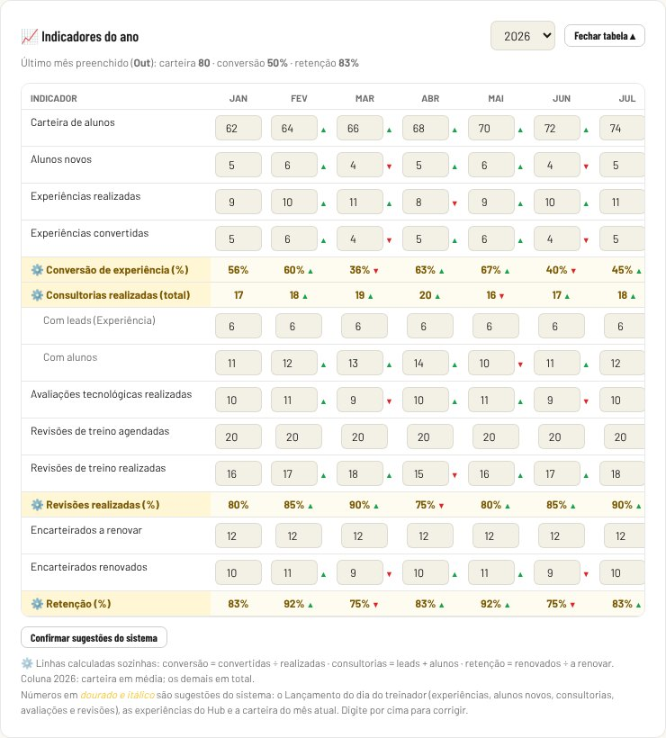
Perfil › 🗣️ Reuniões 1:1
Comece pelos combinados em aberto (Cumpriu, Parcial, Não cumpriu). Depois clique em + Nova ata: ponto principal, ação principal com prazo, outros combinados, como vamos medir e próxima reunião.
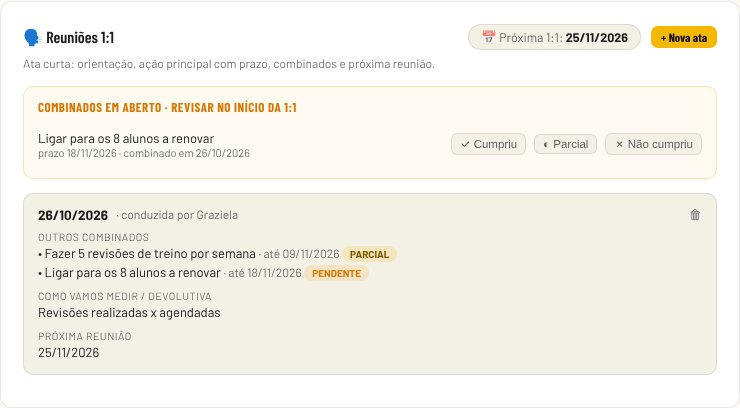
Perfil › 🧠 Perfil comportamental
Clique em Enviar pelo WhatsApp: o treinador responde 12 situações (5 minutos). O resultado aparece só para a gestão. Depois da conversa de devolutiva, ligue "Liberar para o colaborador" se quiser que ele veja.
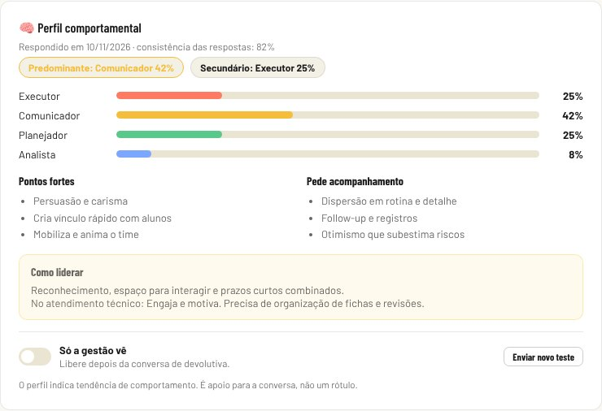
👥 Hub de Pessoas (contratação)
Para candidatos a uma vaga. Abra em Hub › ☰ Ferramentas › 👥 Hub de Pessoas.
- Visão geral: a jornada de contratação em 7 etapas (inscrição, triagem, videochamada, entrevista, teste prático, teste de situações e onboarding de 30, 60 e 90 dias).
- Painel do gestor: entre com o e-mail e a senha de gestor do Hub. Clique em Copiar link do teste e mande para o candidato.
- O candidato responde pelo celular: 12 situações do dia a dia, cerca de 5 minutos, com aceite de uso dos dados (LGPD).
- Onde ver o resultado: no Painel do gestor, clique no nome do candidato. O relatório mostra o perfil predominante e o secundário, a consistência das respostas, os pontos fortes, o que pede acompanhamento, o encaixe em cada área (recepção, vendas, técnica) e perguntas para a entrevista.
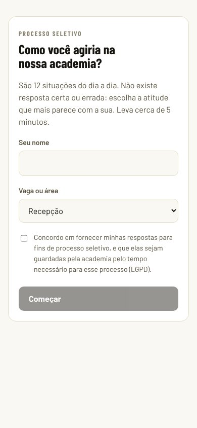
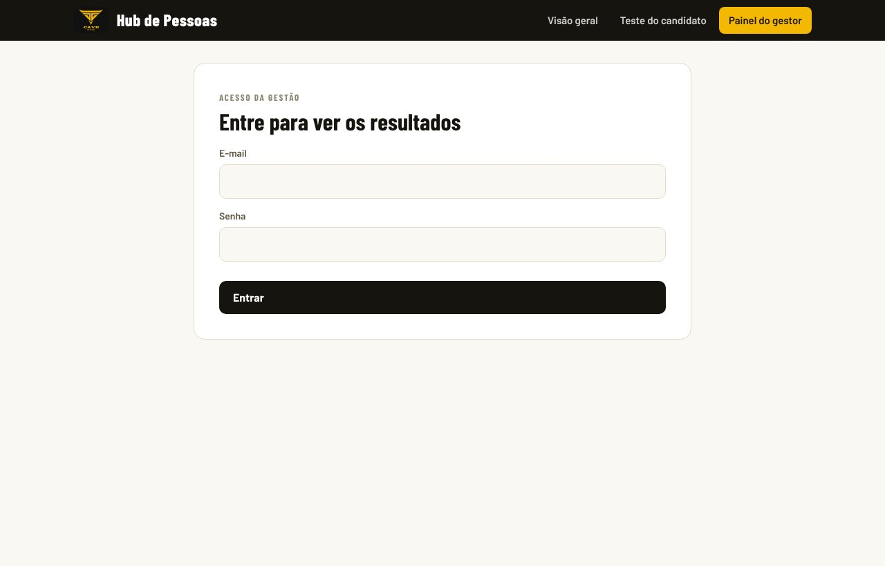
✅ Checklist de teste da gestão
🔁 A rotina
Treinador lança
- No fim do turno, no computador da musculação
- Só o dia de hoje
- Errou outro dia? Pede correção na observação
Gestão acompanha
- 📊 Lançamentos da equipe (Q1 no dia 16, Q2 no fim do mês)
- Libera correções e marca folgas e feriados
- Leva os pontos de atenção para a 1:1
Fechamento
- Confere os indicadores do ano de cada treinador
- Digita carteira e renovação
- Reunião 1:1 com ata e combinados
🔗 Links
| O quê | Quem usa | Link |
|---|---|---|
| Lançamento do dia | Treinadores (computador da musculação) | retencao/lancamento_dia.html |
| Hub | Gestão, consultoras e treinadores | rgcave-plataforma/ |
| Hub de Pessoas | Gestão (candidatos) | Hub › ☰ Ferramentas › 👥 Hub de Pessoas |
| Área do Treinador (Planner) | Treinadores e gestão | retencao/ |
| Este mapa | Todos | mapa-lancamentos.html |
Dúvida sobre como usar? Primeiro o 🧭 Como usar da própria tela. Continua com dúvida? Procure o seu líder.